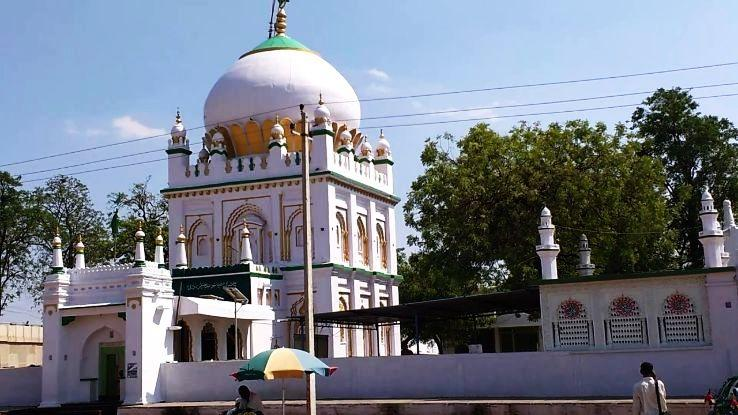

01 · FIRST LOCATION
Ilkal
Ilkal is a medium-developed town in Bagalkot district, Karnataka. We explored its streets, agricultural fields, houses, markets and religious places.
🌾 Agriculture
Sugarcane is one of the major agricultural crops observed in Ilkal.
🕌 Religious Places
We observed more than 20 mosques and visited religious surroundings, including a Maqam Shareef.
📚 Education
Sidra's Branch College for Islamic Studies was our place of stay. We did not identify other madrasa institutions during our observations.
🏘️ Community Life
We explored local streets, houses, markets and everyday community activities.